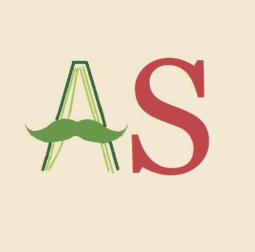

Mission 1 (EN COURS): Lire 20 livres sur des sujets variés qui m'intéressent du 15 juillet 2026 au 25 novembre 2026
Mission 2 (EN COURS): Écouter tout le cours de 'JavaScript' de la chaine youtube Brocode. Passer 1h par jour: temps estimé 15 jours..
Mission 1 (EN COURS): Commencer à écouter le cours de 'Number theory' du professeur Richard E Borcherds sur youtube en prenant des notes. Écouter 5 vidéos par jour jusqu'au bout du cours: temps estimé 11 jours